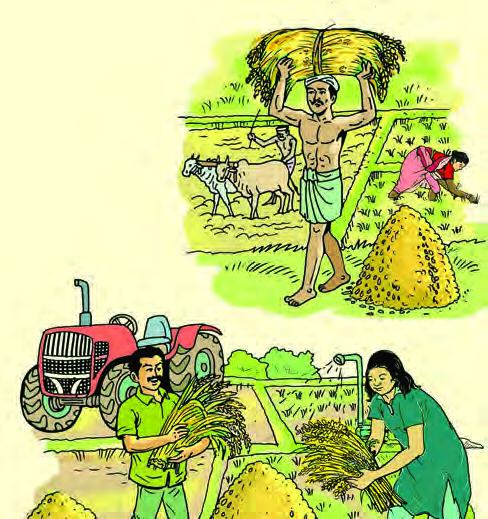
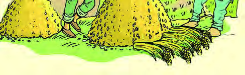

<!DOCTYPE html>
<html lang="ml">
<head>
  <meta charset="utf-8">
  <meta name="viewport" content="width=device-width, initial-scale=1.0">
  <title>Pages 81-96 - Class 9 Social science 2</title>
  <style>

:root {
  --bg-color: #fcfcfd;
  --card-bg: #ffffff;
  --text-color: #1e293b;
  --text-muted: #64748b;
  --primary-color: #0284c7;
  --primary-light: #e0f2fe;
  --border-color: #e2e8f0;
  --radius: 10px;
  --shadow: 0 4px 6px -1px rgb(0 0 0 / 0.05), 0 2px 4px -2px rgb(0 0 0 / 0.05);
}

body {
  font-family: -apple-system, BlinkMacSystemFont, "Segoe UI", Roboto, "Noto Sans Malayalam", "Manjari", "Gayathri", sans-serif;
  background-color: var(--bg-color);
  color: var(--text-color);
  line-height: 1.8;
  font-size: 1.1rem;
  margin: 0;
  padding: 0;
}

.container {
  max-width: 860px;
  margin: 0 auto;
  padding: 2.5rem 1.5rem 5rem 1.5rem;
}

header {
  margin-bottom: 2.5rem;
  padding-bottom: 1.5rem;
  border-bottom: 2px solid var(--border-color);
}

.badge-row {
  display: flex;
  gap: 0.5rem;
  margin-bottom: 0.75rem;
  flex-wrap: wrap;
}

.badge {
  display: inline-block;
  font-size: 0.75rem;
  font-weight: 700;
  text-transform: uppercase;
  letter-spacing: 0.05em;
  padding: 0.25rem 0.65rem;
  border-radius: 9999px;
  background: var(--primary-light);
  color: var(--primary-color);
}

.badge-medium {
  background: #fef3c7;
  color: #b45309;
}

.badge-class {
  background: #dcfce7;
  color: #15803d;
}

h1 {
  font-size: 2.1rem;
  font-weight: 800;
  margin: 0.5rem 0 1rem 0;
  line-height: 1.3;
  color: #0f172a;
}

.nav-bar {
  display: flex;
  justify-content: space-between;
  margin: 1.5rem 0;
  font-size: 0.95rem;
  flex-wrap: wrap;
  gap: 0.5rem;
}

.nav-bar a {
  color: var(--primary-color);
  text-decoration: none;
  font-weight: 600;
  padding: 0.5rem 1rem;
  border-radius: var(--radius);
  background: var(--card-bg);
  border: 1px solid var(--border-color);
  transition: all 0.2s ease;
}

.nav-bar a:hover {
  background: var(--primary-light);
  border-color: var(--primary-color);
}

.nav-bar .disabled {
  color: var(--text-muted);
  pointer-events: none;
  border-color: transparent;
  background: transparent;
}

.page-section {
  background: var(--card-bg);
  border: 1px solid var(--border-color);
  border-radius: var(--radius);
  box-shadow: var(--shadow);
  padding: 2rem;
  margin-bottom: 2.5rem;
}

.page-header {
  display: flex;
  align-items: center;
  justify-content: space-between;
  margin-bottom: 1.25rem;
  padding-bottom: 0.5rem;
  border-bottom: 1px dashed var(--border-color);
}

.page-number {
  font-size: 0.8rem;
  font-weight: 700;
  text-transform: uppercase;
  color: var(--text-muted);
  letter-spacing: 0.05em;
}

.page-content p {
  margin: 0 0 1.25rem 0;
  white-space: pre-wrap;
  word-break: break-word;
}

.page-content p:last-child {
  margin-bottom: 0;
}

.diagram-card {
  margin: 2rem 0;
  text-align: center;
  background: #f8fafc;
  border: 1px solid var(--border-color);
  border-radius: var(--radius);
  padding: 1rem;
  overflow: hidden;
}

.diagram-card img {
  max-width: 100%;
  height: auto;
  border-radius: calc(var(--radius) - 4px);
  display: inline-block;
  box-shadow: 0 2px 4px rgba(0,0,0,0.04);
}

.diagram-card figcaption {
  font-size: 0.85rem;
  color: var(--text-muted);
  margin-top: 0.75rem;
  font-weight: 500;
}

footer {
  margin-top: 3rem;
  padding-top: 2rem;
  border-top: 2px solid var(--border-color);
}

  </style>
</head>
<body>
  <div class="container">
    <header>
      <div class="badge-row">
        <span class="badge badge-class">Class 9</span>
        <span class="badge badge-medium">Malayalam Medium</span>
        <span class="badge">Social science 2</span>
        <span class="badge">Part 1</span>
      </div>
      <h1>Pages 81-96</h1>
      <div class="nav-bar"><a href="part_1_pages_6180.html">← Pages 61-80</a><a href="index.html">☰ Index</a><a href="part_2_1_6.html">97-102 →</a></div>
    </header>
    <main>
<section class="page-section" id="page-81">
  <div class="page-header"><span class="page-number">Page 81</span></div>
  <figure class="diagram-card" id="fig_ch05_p081_01"><figcaption>Figure fig_ch05_p081_01 (Page 81)</figcaption></figure>
  <figure class="diagram-card" id="fig_ch05_p081_03"><figcaption>Figure fig_ch05_p081_03 (Page 81)</figcaption></figure>
  <figure class="diagram-card" id="fig_ch05_p081_04"><figcaption>Figure fig_ch05_p081_04 (Page 81)</figcaption></figure>
  <div class="page-content">
    <p>81<br>Œš†““›‹“¢”•›Žšȹˆ¢Žšu‚›Úš›<br>¡ˆš‚“š–šƠśs“›†›ŒŒš…DZŒŒš›ˆcecuœsŽ›Ú¡ƀĞ<br>¢‚š}sž}› mƼš –šƠśs Ƃ“Åņā‘¡}c e}›Ǚš†<br>v}scˆŒš› Œš›iƹųāÇÚ§“›†›DŽ›Úų‚¢ˆš¡<br>mƼš iƈš„sv}sā‘¡}c “› †›DŽ›ă§ ˆŽžˆĹ›Æ<br>Ƃ‚›‰Œš› †ÆsšÄ s’›Ě “›“›… iƈš„sv}sā‘¡}<br>Ƃ‚›‰Œš ˆšĞc ¢“‚†c ˆ›” š‹c mų›“›Æ n‚Žžˆ<br>śǫƂ‚›‰Œš§sž}‚Æf‘s‘›¢Ú§mś¢ăŽų‚§?<br>eā¡†¡ÿ›Æ n‚§ iƈš„sv}sŒš›Ž›Úc sž}‚š›<br>iƈš„†Ƃ⛍›Æ<br>iˆ¢šu›Úų‚§? iƈš„†Ƃ⛍›¡<br>nǮ“cƂ…š†v}sc¡‚š’›Æeƒ“še…Ǵš†Œš§e…Ǵš†Ĺ›Æ<br>†›ųc‹›Úų ¢“‚†Œš§sž}‚Æz†ā‘¡}c“ŽŒš†ŒšÅuc<br>Œš†““›‹“c<br>iƈš„†Ƃ⛍›Æ ˆ¡ÿ}Úų iƈš„sv}sā¡‘<br>(–šƠ<br>śs“›‹“āÇ)†šcˆŽ›x¡ƀНs’›Ěe“›ÆŒš†““›‹“<br>ś¡źƂš…š†DZ¡Œ¡Ŧų§†›āÇx›Ŧ›ă›Ğ¢Ĭš?iƈš„†Ƃ⛍<br>›Æ iˆ¢šu¡ƀ}ĹšÄ s’›ų e…Ǵš†¢”•›ǫ z†ā<br>‘š§Œš†““›‹“ceƒ“šŒ†•DZ“›‹“c<br>‹DZŒš ƂՂ›“›‹“ā¡‘<br>ŒǮ§ iƈš„sv}sā‘¡} –—š<br>¢Ĺš¡} sš›s䌂c Šŗ›c iˆ¢šu›ă¡sšĬ§ iƹų<br>ā‘šÚ› ŒšǮšÄŒš†““›‹“Ĺ›†§s’›ų<br>iƈš„†äŒ‚ Œš†““›‹“¢”•›¡} u¢ŒŶ †›ÅĴ›Úų<br>Ƃ…š† v}sŒš§ iƈš„†äŒ‚ mƼš“Ž›c pŽ¢ˆš¡<br>š¢š? x“¡} †Æs››Ž›Úų x›Ņc (4.3 a, 4.3 b) †›Žœä›Úž<br>x›Ņ¡Ĺ (4.2)e}›Ǚš†ŒšÚ›ˆĹ›¡źˆŽ›šŒcmų“›•¡Ĺ<br>ڝ›ă§ xÅă ¡xƪ§ sž}‚Æ f”āÇ iÇ¡ƀ}Ĺ› s›ƀ§<br>‚ƭššÚž</p>
  </div>
</section>
<section class="page-section" id="page-82">
  <div class="page-header"><span class="page-number">Page 82</span></div>
  <figure class="diagram-card" id="fig_ch05_p082_01"><figcaption>Figure fig_ch05_p082_01 (Page 82)</figcaption></figure>
  <figure class="diagram-card" id="fig_ch05_p082_04"><figcaption>Figure fig_ch05_p082_04 (Page 82)</figcaption></figure>
  <figure class="diagram-card" id="fig_ch05_p082_06"><figcaption>Figure fig_ch05_p082_06 (Page 82)</figcaption></figure>
  <figure class="diagram-card" id="fig_ch05_p082_07"><figcaption>Figure fig_ch05_p082_07 (Page 82)</figcaption></figure>
  <figure class="diagram-card" id="fig_ch05_p082_08"><figcaption>Figure fig_ch05_p082_08 (Page 82)</figcaption></figure>
  <figure class="diagram-card" id="fig_ch05_p082_09"><figcaption>Figure fig_ch05_p082_09 (Page 82)</figcaption></figure>
  <figure class="diagram-card" id="fig_ch05_p082_10"><figcaption>Figure fig_ch05_p082_10 (Page 82)</figcaption></figure>
  <figure class="diagram-card" id="fig_ch05_p082_11"><figcaption>Figure fig_ch05_p082_11 (Page 82)</figcaption></figure>
  <figure class="diagram-card" id="fig_ch05_p082_12"><figcaption>Figure fig_ch05_p082_12 (Page 82)</figcaption></figure>
  <figure class="diagram-card" id="fig_ch05_p082_13"><figcaption>Figure fig_ch05_p082_13 (Page 82)</figcaption></figure>
  <figure class="diagram-card" id="fig_ch05_p082_15"><figcaption>Figure fig_ch05_p082_15 (Page 82)</figcaption></figure>
  <figure class="diagram-card" id="fig_ch05_p082_16"><figcaption>Figure fig_ch05_p082_16 (Page 82)</figcaption></figure>
  <figure class="diagram-card" id="fig_ch05_p082_17"><figcaption>Figure fig_ch05_p082_17 (Page 82)</figcaption></figure>
  <figure class="diagram-card" id="fig_ch05_p082_18"><figcaption>Figure fig_ch05_p082_18 (Page 82)</figcaption></figure>
  <figure class="diagram-card" id="fig_ch05_p082_19"><figcaption>Figure fig_ch05_p082_19 (Page 82)</figcaption></figure>
  <figure class="diagram-card" id="fig_ch05_p082_20"><figcaption>Figure fig_ch05_p082_20 (Page 82)</figcaption></figure>
  <figure class="diagram-card" id="fig_ch05_p082_21"><figcaption>Figure fig_ch05_p082_21 (Page 82)</figcaption></figure>
  <figure class="diagram-card" id="fig_ch05_p082_22"><figcaption>Figure fig_ch05_p082_22 (Page 82)</figcaption></figure>
  <figure class="diagram-card" id="fig_ch05_p082_23"><figcaption>Figure fig_ch05_p082_23 (Page 82)</figcaption></figure>
  <figure class="diagram-card" id="fig_ch05_p082_24"><figcaption>Figure fig_ch05_p082_24 (Page 82)</figcaption></figure>
  <div class="page-content">
    <p>82<br>‹šuc-<br>iƹųāÇ ǔǏ›¡ă}Úš†ǫ q¢Žš iƈš„sv}sś¡źc<br>s’›“›¡†iƈš„†äŒ‚mųˆų<br>pŽŽšzDZ¡Ĺz†āÇfŽšzDZ¡ĹŒš†““›‹“¢”•›¡Ƃ„š†c<br>¡xƭų v}sā‘›Æ pųš§ ŽšzDZ¡Ĺ Œ’“Ä z†ā¡‘c<br>Œš†““›‹“¢”•›š› ˆŽ›u›ÚšÄ s’›¢Œš? mā¡†ǫ<br>x›ŅśÆ (4.3 a, 4.3 b) iƈš„†äŒ‚ sž}› iƈš„sÅ fŽš<br>¡ųce‚›†§e“¡Ž–—š›ăv}sāÇm¡Ŧš¡Úš¡ųc<br>†›Žœä›ă§s¡ĬŞm’‚›¢ăÅڞ<br>.............................................................................................................................<br>.............................................................................................................................<br>.............................................................................................................................<br>x›Ņc 4.3 a<br>x›Ņc 4.3 b</p>
  </div>
</section>
<section class="page-section" id="page-83">
  <div class="page-header"><span class="page-number">Page 83</span></div>
  <figure class="diagram-card" id="fig_ch05_p083_01"><figcaption>Figure fig_ch05_p083_01 (Page 83)</figcaption></figure>
  <figure class="diagram-card" id="fig_ch05_p083_02"><figcaption>Figure fig_ch05_p083_02 (Page 83)</figcaption></figure>
  <figure class="diagram-card" id="fig_ch05_p083_03"><figcaption>Figure fig_ch05_p083_03 (Page 83)</figcaption></figure>
  <figure class="diagram-card" id="fig_ch05_p083_04"><figcaption>Figure fig_ch05_p083_04 (Page 83)</figcaption></figure>
  <figure class="diagram-card" id="fig_ch05_p083_05"><figcaption>Figure fig_ch05_p083_05 (Page 83)</figcaption></figure>
  <div class="page-content">
    <p>83<br>Œš†““›‹“¢”•›Žšȹˆ¢Žšu‚›Úš›<br>x›Ņc4.4<br>z†–ctDzšˆ›ŽŒ›§ 2011<br>z†“›‹šu¡Ĺš§ ŽšzDZś¡ź Œš†““›‹“¢”•›š› ˆŽ›u›<br>ښÄs’›ų‚§?z†–ctDZ¡}“›ƀcv}†£“„u§…DZcmų›“<br>¡Ƽšc Œš†““›‹“¢”•›¡ –Ǵš…œ†›Úų v}sā‘š§ ¢šs<br>z†–ctDZ›ÆgŦDZpųšcǙš†Ĺš¡ų§sÚsÇ–žx›ƀ›<br>ڝų x“¡} ¡sš}Ĺ›Ž›Úų gŦDZ¡} z†–ctDZšˆ›ŽŒ›§<br>†›Žœä›Úž<br>gŦDZ¡}z†–ctDZšˆ›ŽŒ›§ (x›Ņc 4.4) †›Žœä›ă§ x“¡} ¡sš}Ĺ›<br>Ž›Úų ¢xš„DZāÇÚ§iŎcs¡ĬŚÄNJŒ›Úž<br>z nǮ“c sž}‚Æ f‘sÇ iÇ¡ƀĞ›Ž›Úų‚§ n‚§ Ƃš“›‹šu<br>śš§?<br>z g‚›Æn‚§ Ƃš“›‹šuśš§ †›āÇiÇ¡ƀ}ų‚§?<br>z nǮ“c s“§ f‘sÇ iÇ¡ƀĞ›Ž›Úų‚§ n‚§ Ƃš“›‹šu<br>śš§?<br>z q¢Žš Ƃš“›‹šuś¡cȻœˆŽ•š†ˆš‚cs¡ĬŞ.<br>-12.0<br>-11.0<br>-10.0<br>-9.0<br>-8.0<br>-7.0<br>-6.0<br>-5.0<br>-4.0<br>-3.0<br>-2.0<br>-1.0<br>00<br>1.0<br>2.0<br>3.0<br>4.0<br>5.0<br>6.0<br>7.0<br>8.0<br>9.0<br>10.0 11.0 12.0<br>80+<br>75-79<br>70-74<br>65-69<br>60-64<br>55-59<br>50-54<br>45-49<br>40-44<br>35-39<br>30-34<br>25-29<br>20-24<br>15-19<br>10-14<br>5-9<br>0-4<br>ȼœ<br>ˆŽ•Ä<br>z†–ctDzšˆ›ŽŒ›§ 2011<br>z†–ctDzš”‚Œš†c<br>Ƃš“›‹šuc (“Å•Ĺ›Æ)<br>VRXUFH1DWLRQDO+HDOWK3UR¿OHWKLVVXH</p>
  </div>
</section>
<section class="page-section" id="page-84">
  <div class="page-header"><span class="page-number">Page 84</span></div>
  <figure class="diagram-card" id="fig_ch05_p084_01"><figcaption>Figure fig_ch05_p084_01 (Page 84)</figcaption></figure>
  <figure class="diagram-card" id="fig_ch05_p084_03"><figcaption>Figure fig_ch05_p084_03 (Page 84)</figcaption></figure>
  <figure class="diagram-card" id="fig_ch05_p084_04"><figcaption>Figure fig_ch05_p084_04 (Page 84)</figcaption></figure>
  <figure class="diagram-card" id="fig_ch05_p084_06"><figcaption>Figure fig_ch05_p084_06 (Page 84)</figcaption></figure>
  <figure class="diagram-card" id="fig_ch05_p084_07"><figcaption>Figure fig_ch05_p084_07 (Page 84)</figcaption></figure>
  <figure class="diagram-card" id="fig_ch05_p084_08"><figcaption>Figure fig_ch05_p084_08 (Page 84)</figcaption></figure>
  <div class="page-content">
    <p>84<br>‹šuc-<br>z†–ctDZšˆ›ŽŒ››¡ź v}† †›āÇ Œ†Ǡ›šÚ›¢Ƽš “›“›…<br>ƂšˆŽ›…››Æ¡ƀ}ųz†āÇiÇ¡ƀ}ų‚š§ŽšzDZś¡źz†<br>–ctDZšv}† z†–ctDZ¡} “›ƀŒƼ e‚›¡ź u¢ŒŶš§<br>Œš†““›‹“¡Ĺ<br>†›ÅĴ›Úų‚§<br>gŦDZšu“áŒź§ <br>2023 <br>¡‰Ɩ“Ž››Æ Ƃ–›ŗœsŽ›ă ˆœŽ›¢š›s§ ¢ŠÅ ¢‰š’§–§<br>–Å¡“<br>(PLFS) ›¢ƀšÅЧ ƂsšŽc<br>15 “Ǡ›†c e‚›†Œs‘›c<br>ƂšŒǫ<br>¡‚š’›Æ<br>¡xƭšÄ<br>–ųŗ‚c<br>s’›“Œǫ<br>z†“›‹šuŒš§ ŽšzDZś¡ź<br>¡‚š’›Æ¢–† (Labour Force) mų<br>“›‹šuśÆ<br>iÇ¡ƀ}ų‚§<br>h<br>Ƃšv}†›Æ¡ƀĞ<br>z†ā<br>‘¡} mĴc sž}‚š¡ÿ›Æ –Ơ„§v}†¡} “ŽŒš†¡Ĺc<br>“‘Åă¡ce‚§e†sžŒš›–Ǵš…œ†›Úų<br>Œš†““›‹“c iƈš„†äŒ‚ g“ mŦš¡ų †›āÇ Œ†Ǡ›<br>šÚ›Ú’›Ě Œš†““›‹“Ĺ›¡ź iƈš„†äŒ‚ “Å…›ƀ›ÚšÄ<br>s’›¢Œš? Œš†““›‹“c iƈš„†Ĺ›¡ź x†šŃs (Dynamic)<br>v}sŒš§  ių‚ “›„DZš‹DZš–c ix›‚Œš ˆŽ›”œ†c f¢ŽšuDZ<br>ˆŽ›Žä‚}ā›“iƀ“ŽĹs“’›Œš†““›‹“¢”•›¡sž}<br>‚ÆsšŽDZ䌂ǫ‚šÚ›ŒšǮšÄs’›ciƈš„†äŒ‚“Å…›ƀ›<br>ڝų‚›†¢“Ĭ› ¢ŒƹĚv}sā‘›Ä¢ŒÆsž}‚Ɔ›¢äˆ<br>ādž}ŝ¢Ơš’š§Œ†•DZŒž…†ŽžˆœsŽc –š…DZŒšsų‚§<br>Œ†•DzŒž…†c<br>†ƣÇq¢ŽšŽĹŽc“›„DZš‹DZš–c¢†}ų‚§mŦ›†§¢“Ĭ›š§?<br>Œš†““›‹“ā‘š †ƣÇ q¢ŽšŽĹŽc “›„DZš‹DZš–Ĺ›ž¡}c<br>¡‚š’›ÆˆŽ›”œ†Ĺ›ž¡}c Œ†•DZŒž…†Œš› Œšų Œš†“<br>“›‹“¢”•›¡} –šƠśsŒžDZŒš§ Œ†•DZŒž…†c Œ†•DZ<br>Œž…† ¢”tŽĹ›¢Ú§sšâ¢Œ†}ŝų sžĞ›¢ăÅڐs‘š§<br>Œ†•DZŒž…†ŽžˆœsŽc<br>ŽšzDZś¡ź z†–ctDZš¢š<br>¡‚š’›Æ¢–†š¢š<br>–Ơ„§v}†<br>¡}“ŽŒš†¡Ĺc“‘Åă¡ce†sžŒš›–Ǵš…œ†›Úų‚§? <br>xÅă¡xƭžs›ƀ§‚ƭššÚž<br>n‚§Ƃš“›‹šuśÆiÇ¡ƀĞ“Åښ›Ž›Úcsž}‚š›¡‚š’›Æ<br>¡xƭ“šÄ–ųŗ‚cƂšž›ciĬš›Ž›Ús?mŦ¡sšĬ§?</p>
  </div>
</section>
<section class="page-section" id="page-85">
  <div class="page-header"><span class="page-number">Page 85</span></div>
  <figure class="diagram-card" id="fig_ch05_p085_01"><figcaption>Figure fig_ch05_p085_01 (Page 85)</figcaption></figure>
  <figure class="diagram-card" id="fig_ch05_p085_03"><figcaption>Figure fig_ch05_p085_03 (Page 85)</figcaption></figure>
  <figure class="diagram-card" id="fig_ch05_p085_04"><figcaption>Figure fig_ch05_p085_04 (Page 85)</figcaption></figure>
  <figure class="diagram-card" id="fig_ch05_p085_05"><figcaption>Figure fig_ch05_p085_05 (Page 85)</figcaption></figure>
  <figure class="diagram-card" id="fig_ch05_p085_07"><figcaption>Figure fig_ch05_p085_07 (Page 85)</figcaption></figure>
  <figure class="diagram-card" id="fig_ch05_p085_08"><figcaption>Figure fig_ch05_p085_08 (Page 85)</figcaption></figure>
  <figure class="diagram-card" id="fig_ch05_p085_09"><figcaption>Figure fig_ch05_p085_09 (Page 85)</figcaption></figure>
  <div class="page-content">
    <p>85<br>Œš†““›‹“¢”•›Žšȹˆ¢Žšu‚›Úš›<br>gŦDZ¡}z†–ctDZ›Æ“Å…›ă“Žų ¡‚š’›Æ¢–†ŽšzDZś†§<br>¢†ĞŒš›<br>Œš¡Œÿ›Æ Œ†•DZŒž…†c “Å…›ƀ›¢ÚĬ‚§<br>e‚DZŦš¢ˆä›‚Œš§<br>z<br>¡Œă¡ƀĞf¢ŽšuDZ–­sŽDZāÇpŽÚs<br>z<br>“›„DZš‹DZš–Žcuŧ“Ä¢‚š‚›ǫ†›¢äˆc–š…DZŒšÚs<br>z<br>£†ˆ›“›s–†Ĺ›†§ Ƃš…š†DZc †Æss<br>z<br>¡‚š’›š‘›–­Ǣ„¡‚š’›ÆeŦŽœäcǔǏ›Ús<br>z<br>z<br>z<br>z<br>Œ†•DzŒž…†ŽžˆœsŽ¡Ĺ –ǵš…œ†›Úųv}sāÇ<br>Œ†•DZŒž…†ŽžˆœsŽ¡Ĺ –Ǵš…œ†›Úų v}sā‘š§ “›„DZš<br>‹DZš–cf¢ŽšuDZˆŽ›Žä¡‚š’›ÆˆŽ›”œ†cs}›¢Ǯc“›“Ž‹DZ‚<br>Œ‚š“<br>†›āÇÚ§ˆŽ›x›‚ŒšŒ†•DZŒž…†ŽžˆāÇm’‚›¢ăÅڞ<br>z sŕsÅ<br>z e…DZšˆsÅ<br>z ”šȻčÅ<br>z<br>z<br>z<br>Œ†•DZŒž…†¡Ĺmā¡†¡Ƽšc ”Þ›¡ƀ}Ĺšc?</p>
  </div>
</section>
<section class="page-section" id="page-86">
  <div class="page-header"><span class="page-number">Page 86</span></div>
  <figure class="diagram-card" id="fig_ch05_p086_01"><figcaption>Figure fig_ch05_p086_01 (Page 86)</figcaption></figure>
  <figure class="diagram-card" id="fig_ch05_p086_03"><figcaption>Figure fig_ch05_p086_03 (Page 86)</figcaption></figure>
  <figure class="diagram-card" id="fig_ch05_p086_04"><figcaption>Figure fig_ch05_p086_04 (Page 86)</figcaption></figure>
  <figure class="diagram-card" id="fig_ch05_p086_05"><figcaption>Figure fig_ch05_p086_05 (Page 86)</figcaption></figure>
  <div class="page-content">
    <p>86<br>‹šuc-<br>Œ†•DzŒž…†<br>ŽžˆœsŽc<br>“›„Dzš‹Dzš–c<br>f¢ŽšuDzc<br>“›“Ž‹Dz‚<br>s}›¢ǯc<br>¡‚š’›ÆˆŽ›”œ†c<br>x›Ņc 4.5<br>Œ†•DZŒž…†ŽžˆœsŽ¡Ĺ –Ǵš…œ†›Úųhv}sā¡‘ڝ›ă§<br>“›”„Œš›xÅă ¡xƭǰ<br>“›„Dzš‹Dzš–c<br>mŦ¡sšĬš§ Žä›‚šÚÇ †ƣ¡}<br>“›„DZš‹DZš–Ĺ›†§ “‘¡Ž<br>…›sc Ƃš…š†DZc †Æsų‚§? “›„DZš‹DZš–Ĺ›ž¡} m¡ŦƼǰ ŒšǮ<br>ā‘š§ †ƣ‘›Æ iĬšsų‚§?<br>“›„DZš‹DZš–“c£“„u§…DZ“Œǫ<br>z†‚ ŽšzDZś¡ź fǘ›¢Ƽ?<br>mā¡†¡ƼšŒš§e“ÅŽšzDZ<br>ś¡ź“›s–†¡Ĺ–Ǵš…œ†›Ú<br>ų‚§? “›„DZš‹DZš–Ĺ›ž¡}f…<br>†›s –š¢ÿ‚›s“›„DZ<br>‰Ƃ„<br>Œš›“›†›¢šu›Úš†c ¡Œă¡ƀĞ<br>¡‚š’›Æ–ǴšĹŒšÚš†c sž}<br>‚Æ“ŽŒš†c ¢†}š†ce‚“’›<br>ŽšzDZś¡ź“‘ÅăƩ§Œ‚ÆÚžĞš<br>sš†cz†‚Ʃ§s’›ų“›„DZš<br>‹DZš–Ĺ›ž¡} iÅų<br>zœ“›‚<br>†›“šŽc ¢†}s mų‚›ˆŽ›<br>ių‚ŒžDZ¢Šš…ŒǫpŽ–Œž<br>—¡Ĺ ǔǏ›Ú“š†c<br>–š…›<br>ڝų Œš†““›‹“¡Ĺ Œ†•DZ<br>Œž…†ŒšÚ›“›s–›ƀ›¡ă}ÚšÄ<br>¡ˆš‚¢Œt›c –—sŽ¢Œt<br>›c–ǴsšŽDZ¢Œt›c“Ä<br>†›¢äˆc†}¢ĹĬ‚Ĭ§<br>Š­ŗ›s¢”•›c“›“Ž–š¢ÿ‚›s“›„DZc –Œ†Ǵ›<br>ƀ›ă¡sšĬ§ ˆŽŒš“…› –šƠśs “‘Åă £s“Ž›<br>ڝs mų‚§ f…†›ssšvĞś¡ź e†›“šŽDZ‚<br>š§ –šƠśs Ƃ“Åņā‘¡} “›“›…‚ā<br>‘›ÆŠŗ›¢š¡}šƀc†ž‚†–š¢ÿ‚›sf”ā‘c<br>“›“Ž–š¢ÿ‚›s“›„DZc“›†›¢šu›Úų –Ơ„§âŒ<br>Œš§ “›čš†–Ơ„§“DZ“Ǚ Š­ŗ›s‚¡ pŽ<br>Š­ŗ›sŒž…†ŒšÚ›ŒšǮ› iƈš„†“c e‚›ž¡}<br>‹DZŒšsų Š­ŗ›siƹųā‘¡} ¡sš}ÚÆ “šā<br>s‘c (⍓›âc)f§g‚›ž¡}äDZŒšÚų‚§<br>”šȻčÅu¢“•sņŽžˆœsŽ“›„u§…Åq—Ž›<br>†›s‚›mų›“¡Ú›ă§“›„u§…š‹›Ƃšc†Æsų<br>“Å¢–šƎ§¡“Å“›„u§…Åmų›“¡ŽƼšch¢Œt<br>¡”Þ›¡ƀ}ĹųŒ†•DZ“›‹“ā‘š§¡}s§¢†š<br>ˆšÅÚ§ gÄ¢‰šˆšÅÚ§ ‚}ā› Ǚšˆ†āÇ<br>“›čš†–Ơ„§“DZ“Ǚ¡}“‘ÅăƩ§fÚcsžĞų<br>fǘ›s‘š§<br>“›čš†–Ơ„§“DZ“Ǚ<br>(Knowledge Economy)</p>
  </div>
</section>
<section class="page-section" id="page-87">
  <div class="page-header"><span class="page-number">Page 87</span></div>
  <figure class="diagram-card" id="fig_ch05_p087_01"><figcaption>Figure fig_ch05_p087_01 (Page 87)</figcaption></figure>
  <figure class="diagram-card" id="fig_ch05_p087_03"><figcaption>Figure fig_ch05_p087_03 (Page 87)</figcaption></figure>
  <figure class="diagram-card" id="fig_ch05_p087_04"><figcaption>Figure fig_ch05_p087_04 (Page 87)</figcaption></figure>
  <figure class="diagram-card" id="fig_ch05_p087_05"><figcaption>Figure fig_ch05_p087_05 (Page 87)</figcaption></figure>
  <figure class="diagram-card" id="fig_ch05_p087_06"><figcaption>Figure fig_ch05_p087_06 (Page 87)</figcaption></figure>
  <figure class="diagram-card" id="fig_ch05_p087_07"><figcaption>Figure fig_ch05_p087_07 (Page 87)</figcaption></figure>
  <figure class="diagram-card" id="fig_ch05_p087_08"><figcaption>Figure fig_ch05_p087_08 (Page 87)</figcaption></figure>
  <figure class="diagram-card" id="fig_ch05_p087_09"><figcaption>Figure fig_ch05_p087_09 (Page 87)</figcaption></figure>
  <figure class="diagram-card" id="fig_ch05_p087_10"><figcaption>Figure fig_ch05_p087_10 (Page 87)</figcaption></figure>
  <figure class="diagram-card" id="fig_ch05_p087_11"><figcaption>Figure fig_ch05_p087_11 (Page 87)</figcaption></figure>
  <figure class="diagram-card" id="fig_ch05_p087_12"><figcaption>Figure fig_ch05_p087_12 (Page 87)</figcaption></figure>
  <figure class="diagram-card" id="fig_ch05_p087_14"><figcaption>Figure fig_ch05_p087_14 (Page 87)</figcaption></figure>
  <figure class="diagram-card" id="fig_ch05_p087_15"><figcaption>Figure fig_ch05_p087_15 (Page 87)</figcaption></figure>
  <figure class="diagram-card" id="fig_ch05_p087_16"><figcaption>Figure fig_ch05_p087_16 (Page 87)</figcaption></figure>
  <figure class="diagram-card" id="fig_ch05_p087_17"><figcaption>Figure fig_ch05_p087_17 (Page 87)</figcaption></figure>
  <figure class="diagram-card" id="fig_ch05_p087_18"><figcaption>Figure fig_ch05_p087_18 (Page 87)</figcaption></figure>
  <figure class="diagram-card" id="fig_ch05_p087_19"><figcaption>Figure fig_ch05_p087_19 (Page 87)</figcaption></figure>
  <figure class="diagram-card" id="fig_ch05_p087_21"><figcaption>Figure fig_ch05_p087_21 (Page 87)</figcaption></figure>
  <figure class="diagram-card" id="fig_ch05_p087_22"><figcaption>Figure fig_ch05_p087_22 (Page 87)</figcaption></figure>
  <figure class="diagram-card" id="fig_ch05_p087_23"><figcaption>Figure fig_ch05_p087_23 (Page 87)</figcaption></figure>
  <figure class="diagram-card" id="fig_ch05_p087_24"><figcaption>Figure fig_ch05_p087_24 (Page 87)</figcaption></figure>
  <figure class="diagram-card" id="fig_ch05_p087_25"><figcaption>Figure fig_ch05_p087_25 (Page 87)</figcaption></figure>
  <figure class="diagram-card" id="fig_ch05_p087_26"><figcaption>Figure fig_ch05_p087_26 (Page 87)</figcaption></figure>
  <figure class="diagram-card" id="fig_ch05_p087_27"><figcaption>Figure fig_ch05_p087_27 (Page 87)</figcaption></figure>
  <figure class="diagram-card" id="fig_ch05_p087_28"><figcaption>Figure fig_ch05_p087_28 (Page 87)</figcaption></figure>
  <figure class="diagram-card" id="fig_ch05_p087_29"><figcaption>Figure fig_ch05_p087_29 (Page 87)</figcaption></figure>
  <div class="page-content">
    <p>87<br>Œš†““›‹“¢”•›Žšȹˆ¢Žšu‚›Úš›<br>x›Ņc 4.6<br>“›„Dzš‹Dzš–c<br>s’›“§“Å…›Úų<br>–š¢ÿ‚›sˆŽ›čš†c<br>£†ˆ›“›s–†c<br>¡Œă¡ƀĞ¡‚š’›Æ<br>¡Œă¡ƀĞ“ŽŒš†c<br>¡Œă¡ƀĞzœ“›‚†›“šŽc<br>ŽšzDzˆ¢Žšu‚›<br>gŎśǫ †›¢äˆĹ›ž¡} “›„DZš‹DZš–†āÇ Ƃš“Åś<br>sŒšÚšÄ –š…›Úų¢‚š¡}šƀc “›„DZš‹DZš–¢Œt›Æ –š¢ÿ‚›<br>sŒš†ž‚†ˆŗ‚›sÇf“›•§sŽ›ă§†}ƀ›šÚš†cs’›ųg‚§<br>–Ơ„§v}†¡}“‘ÅăƩcˆ¢Žšu‚›Úce‚DZŦš¢ˆä›‚Œš§<br>“›„DZš‹DZš–c¢ˆš¡‚¡ųf¢ŽšuDZŒǫz†‚cŒ†•DZŒž…†<br>ŽžˆœsŽ¡Ĺ –Ǵš…œ†›ÚųƂ…š†v}sŒš§<br>f¢ŽšuDzc<br>mŦš§ f¢ŽšuDZc? ”šŽœŽ›s“c Œš†–›s“c –šŒž—›s“Œš<br>–Ǚ›‚›š§ f¢ŽšuDZc mų§ ¢šsš¢ŽšuDZ–cv}† (WHO)<br>†›Å“x›Úųf¢ŽšuDZ䌂sĚpŽ “DZޛڧ Œ‚›šˆŽ›<br>u†cf¢ŽšuDZˆŽ›Žäc‹›ÚšĹˆäcŽšzDZˆ¢Žšu‚›<br>›ÆsšŽDZ䌌š›–c‹š“† †ÆsšÄ–š…›Ús›Ƽf¢ŽšuDZ<br>䌂 sų‚§ “DZޛ¡c ŽšzDZˆ¢Žšu‚›¡c mā¡†<br>¡ƼšcŠš…›Úų?<br>“›„DZš‹DZš–cmā¡†ŽšzDZ¡Ĺˆ¢Žšu‚››¢Ú§†›Úų¡“ų§<br>‚š¡’¡sš}Ĺ›Ž›Úų x›Ņc (4.6)†›Žœä›ă§Œ†Ǡ›šÚžxÅă¡xƪ§<br>f”āÇs›Úž</p>
  </div>
</section>
<section class="page-section" id="page-88">
  <div class="page-header"><span class="page-number">Page 88</span></div>
  <figure class="diagram-card" id="fig_ch05_p088_01"><figcaption>Figure fig_ch05_p088_01 (Page 88)</figcaption></figure>
  <figure class="diagram-card" id="fig_ch05_p088_03"><figcaption>Figure fig_ch05_p088_03 (Page 88)</figcaption></figure>
  <figure class="diagram-card" id="fig_ch05_p088_04"><figcaption>Figure fig_ch05_p088_04 (Page 88)</figcaption></figure>
  <figure class="diagram-card" id="fig_ch05_p088_05"><figcaption>Figure fig_ch05_p088_05 (Page 88)</figcaption></figure>
  <div class="page-content">
    <p>88<br>‹šuc-<br>z iƈš„†äŒ‚sų<br>z ¢zš››Æ†›ų§“›Ğ†›Æ¢ÚĬ›“Žų<br>z iƈš„†csų<br>z<br>z<br>z<br>z<br>“DZޛs‘¡} zœ“›‚†›“šŽc iÅŝų¢‚š¡}šƀc ŽšzDZˆ¢Žš<br>u‚›£s“Ž›Úų‚›†§z†ā‘¡}f¢ŽšuDZˆŽ›Žäiƀ“Ž¢Ĺ<br>Ĭ‚§e‚DZš“”DZŒš§z†ā‘¡}iƈš„†äŒ‚›cu†›<br>“šŽĹ›c –Ǵš…œ†c ¡xĹ› Œš†““›‹“¢”•› “›s–›ƀ›Úų<br>‚›Æe}›Ǚš†ˆŽŒšˆÿ“—›ÚųƂ…š†v}sŒš§f¢ŽšuDZ<br>ˆŽ›ˆš†c<br>Œš†““›‹“Ĺ›¡źiƈš„†äŒ‚“Å…›ƀ›Úų‚›†ǫf¢ŽšuDZ<br>ˆŽ›ˆš†ŒšÅuāÇm¡ŦƼšc? †›ā‘¡} †›Å¢Ŕ”āÇm’‚›¢ăÅڝ<br>z<br>¢ŽšuƂ‚›¢Žš…–c“›…š†āÇsšŽDZ䌌šÚs<br>z<br>”x›‚ǴˆŽ›ˆš†Ĺ›†§ Ƃš…š†DZc †Æss<br>z<br>Œ‚›š¢ˆš•sš—šŽ‹DZ‚iƀšÚs<br>z<br>¡Œă¡ƀĞ x›s›Ňš–­sŽDZc‹DZŒšÚs<br>z<br>“›¢†š„“c“›NJŒ“ciƀ“ŽĹs<br>z<br>z<br>z</p>
  </div>
</section>
<section class="page-section" id="page-89">
  <div class="page-header"><span class="page-number">Page 89</span></div>
  <figure class="diagram-card" id="fig_ch05_p089_01"><figcaption>Figure fig_ch05_p089_01 (Page 89)</figcaption></figure>
  <figure class="diagram-card" id="fig_ch05_p089_03"><figcaption>Figure fig_ch05_p089_03 (Page 89)</figcaption></figure>
  <figure class="diagram-card" id="fig_ch05_p089_04"><figcaption>Figure fig_ch05_p089_04 (Page 89)</figcaption></figure>
  <figure class="diagram-card" id="fig_ch05_p089_05"><figcaption>Figure fig_ch05_p089_05 (Page 89)</figcaption></figure>
  <figure class="diagram-card" id="fig_ch05_p089_06"><figcaption>Figure fig_ch05_p089_06 (Page 89)</figcaption></figure>
  <div class="page-content">
    <p>89<br>Œš†““›‹“¢”•›Žšȹˆ¢Žšu‚›Úš›<br>f¢ŽšuDZˆŽ›ˆš†Ĺ›†š› †ŒÚ§ xǮc †›Ž“…› Ǚšˆ†āÇ<br>Ƃ“Åśڝų¡ˆš‚¢Œt›c–ǴsšŽDZ¢Œt›c–—sŽ<br>¢Œt›c gŎc f¢ŽšuDZ ˆŽ›ˆš† ¢sůāÇ Ƃ“Åś<br>ڝųĬ§<br>¡ˆš‚z†¢äŒ¡Ĺ<br>ŒÄ†›Åśǫ<br>f¢ŽšuDZ<br>ˆŽ›ˆš†Ƃ“ÅņāÇ ¡ˆš‚¢Œt›Æ sšŽDZ䌌š› †}ų<br>“Žų ¡ˆš‚¢Œt›¡ f¢ŽšuDZˆŽ›ˆš†–c“›…š†ā‘š§<br>f¢ŽšuDZ iˆ¢sůāÇ ƂšƒŒ›s f¢ŽšuDZ¢sůāÇ –šŒž—›s<br>f¢ŽšuDZ¢sůāÇ ‚šžÚ§ f”ˆŅ›sÇ z›Ƽš f”ˆŅ›sÇ<br>¡Œ›ÚÆ ¢sš¢‘zsÇ ‚}ā›“ g¢‚š¡}šƀc fÅ¢“„c<br>¢šu ƂՂ›x›s›Ň ž†š†› ¢—šŒ›¢šƀ‚› ‚}ā› “›“›…<br>x›s›Ňš–­sŽDZāÇ ‹DZŒšÚų †›Ž“…› Ǚšˆ†ā‘c “›“›…<br>¢Œts‘›š›Ƃ“Åś㝓Žų<br>f¢ŽšuDZ¢Œt›ǫu“áŒź›¡ź†›¢äˆāÇŒ†•DZŒž…†<br>ŽžˆœsŽ¡Ĺ ”Þ›¡ƀ}Ĺų f¢ŽšuDZˆŽ›ˆš† –c“›…š†<br>ā‘›ž¡} Ƃ‚›¢Žš… r•…āÇ Ƃ‚›¢Žš… sĹ›“§ƀsÇ<br>¢Žšuc ¢‹„ŒšÚš†ǫ r•…āÇ ¢ˆš•sš—šŽ‹DZ‚ f¢ŽšuDZ<br>–šäŽ‚¡}ƂxŽc”ŗŒšs}›¡“ǫ“›‚Žc”xœsŽ<br>†}ˆ}›sÇmų›“ †}ƀ›šÚ›“Žųf¢ŽšuDZˆŽ›ˆš†Ƃ“Å<br>ņāÇÚ§ ¢sŽ‘c ¢šsŽšȸāÇÚ§ pŽ ŒšĶsš§ mųǫ<br>‚›Æ†ŒÚ§e‹›Œš†›Úǰ<br>s}›¢ǯc<br>†›ā‘¡} s}cŠǰuā‘›Æ f¡Žÿ›c ŒǮ –cǙš†ā‘›¡š<br>“›¢„”ŽšzDZā‘›¡š ¢zš›¡xƭų¢Ĭš? ¡‚š’››†c“›„DZš‹DZš–<br>ś†ciÅų zœ“›‚†›“šŽĹ›†Œš›f‘sdžƣ¡}–cǙš<br>†Ĺ†›ųc ŒǮ –cǙš†ā‘›¢¡Úš “›¢„”ŽšzDZā‘›¢¡Úš<br>¢ˆš“s¢š e“›¡} †›ų§ †ƣ¡} –cǙš†¢Ĺ¡Úš<br>ŽšzDZ<br>¢Ĺ¡Úš “Ž›s¢š ¡xƭų‚§†›āÇNJŗ›ă›Ğ›¢Ƽ?gŎśÆ<br>pŽ Ƃ¢„”ŝ†›ų§ Œ¡ǮšŽ Ƃ¢„”¢ĹÚ§ Ǚ›ŽŒš¢š ‚šÆښ<br>›sŒš¢šz†āÇŒš›ĹšŒ–›Úų‚›¡†š§s}›¢Ǯcmų§<br>ˆų‚§–šŒž—›s–šƠśs–šcǗšŽ›s ¢Œts‘›Æs}›<br>¢Ǯc †›Ž“…› ŒšǮāÇ iĬšÚų s}›¢Ǯś¡ź e†ŦŽ<br>‰Œš›iĬšsų Ƃš¢„”›sŒšǮāÇiǡښǫų‚›†cf“”DZ<br>ādž›¢“Ǯų‚›†c¡x“sÇ“—›Úsmų‚§u“áŒź›¡ź<br>iŎ“š„›‚ǴŒš§ g‚§ f Ƃ¢„”¡Ĺ Œ†•DZŒž…†ŽžˆœsŽ<br>ś†§–—šsŽŒšsų<br>†›ā‘¡} Ƃ¢„”ŝ†}ڝų“›“›…f¢ŽšuDZ–cŽäƂ“Åņ<br>ā¡‘ڝ›ă§e¢†Ǵ•›ă›ž</p>
  </div>
</section>
<section class="page-section" id="page-90">
  <div class="page-header"><span class="page-number">Page 90</span></div>
  <figure class="diagram-card" id="fig_ch05_p090_01"><figcaption>Figure fig_ch05_p090_01 (Page 90)</figcaption></figure>
  <figure class="diagram-card" id="fig_ch05_p090_03"><figcaption>Figure fig_ch05_p090_03 (Page 90)</figcaption></figure>
  <figure class="diagram-card" id="fig_ch05_p090_04"><figcaption>Figure fig_ch05_p090_04 (Page 90)</figcaption></figure>
  <figure class="diagram-card" id="fig_ch05_p090_05"><figcaption>Figure fig_ch05_p090_05 (Page 90)</figcaption></figure>
  <div class="page-content">
    <p>90<br>‹šuc-<br>¡‚š’›ÆˆŽ›”œ†c<br>x› Ƃ¢‚DZs ¢Œts‘›Æ ¡‚š’›sÇ ‹›Úų‚›†§ £†ˆ›<br>“›s–†ˆŽ›”œ†āÇ †›ÅŠŰŒš§ ¢šÜc mĕ›†œc<br>e…DZšˆsŽ¡ŒƼšcfsų“Åe“Ž“Ž¡} ¢Œt›Æe†¢šzDZ<br>Œš ‚ŽĹ›ǫ ˆŽ›”œ† ¢sš’§–s‘›ž¡} ¡‚š’›ÆˆŽŒš<br>Ƃš“œDZc ¢†}ųe‚¢ˆš¡‚¡ų“›“›…¡‚š’›Æ¢Œts‘›Æ<br>¢zš› ¡xƭų“ÅÚ§ e‚š‚§ Ǚšˆ†āÇ ˆ vĞā‘›š›<br>¡‚š’›ÆˆŽ›”œ†c †ÆsšĬ¢Ƽš ¡‚š’›ÆˆŽ›”œ†c ¢†}ų‚§<br>iƈš„†äŒ‚ “Å…›ƀ›ÚšÄ –—š›Úc e‚“’› iÅų<br>iƈš„†c –š…DZŒšsc ¡‚š’›ÆˆŽ›”œ†c Œ†•DZŒž…†ŽžˆœsŽ<br>¡Ĺe‚›¡źˆšŽŒDZ‚›Æmśڝsc¡xƭc<br>“›“Ž‹Dz‚<br>Œ†•DZŒž…†ŽžˆœsŽ¡Ĺ –—š›Úų Œ¡ǮšŽ v}sŒš§<br>“›“Ž‹DZ‚“›„DZš‹DZš–cf¢ŽšuDZc¡‚š’›Æ‚}ā›“›“›…¢Œt<br>s‘›¡ ¢–“†āÇŒ†•DZŒž…†ŽžˆœsŽĹ›†§fÚcsžĞų<br>“›“›… ¢ŒtsÇ †Æsų ¢–“†ā‘ڝ›ă§ “›“Ž¢”tŽc<br>†}ŝų‚›†§z†ā¡‘–—š›Úų ‚ŽĹ›Æ“›“Ž‹DZ‚ ˆŽ›<br>¢ˆš•›ƀ›Ú¡ƀ¢}Ĭ‚Ĭ§“›“Ž‹DZ‚iƀ“ŽĹ›Œ†•DZŒž…†<br>ŽžˆœsŽc–š…DZŒšÚų‚›†§u“áŒź›¡źg}¡ˆ}Æe†›“šŽDZ<br>Œš§<br>Œ†•DzŒž…†ŽžˆœsŽc ¢†Ž›}ų¡“ƽ“›‘›sÇ<br>„šŽ›ŝDzc<br>e}›Ǚš†f“”DZāÇ¢ˆšc†›¢“ǮšÄs’›šĹe“Ǚš§<br>„šŽ›ŝDZcŒ†•DZŒž…†ŽžˆœsŽc¢†Ž›}ųnǮ“c“›¡“Ƽ“›‘›<br>š›‚§sĚ“ŽŒš†Œš§Œ†•DZ¡† „šŽ›ŝDZś¢Ú§‚ǫ›“›}<br>ų‚§ sĚ“ŽŒš†c sšŽc Œ†•DZ†§ “›„DZš‹DZš–c f¢ŽšuDZc<br>‚}ā› e}›Ǚš† f“”DZāÇ ¢ˆšc †›¢“ǮšÄ s’›š¡‚<br>“Ž›sc e‚§ sž}‚Æ „šŽ›ŝDZś¢Ú§ ¡sš¡Ĭśڝsc<br>¡xƭų „šŽ›ŝDZś¡ź sšŽā‘c e†ŦŽ‰ā‘c pŽ<br>“Ĺ›Æmų¢ˆš¡ˆŽǜŽcŠŰ¡ƀĞ›Ž›Úųg‚¢‹„›ăšÆ<br>ŒšŅ¢Œ Œš†““›‹“¢”•› ¡Œă¡ƀ}Ĺ› Œ†•DZŒž…†ŽžˆœsŽc<br>–š…DZŒš“sǫž<br>x“¡}<br>‚ų›Ž›Úų<br>x›Ņc 4.7<br>†›Žœä›ă§<br>„šŽ›ŝDZś†§<br>sšŽŒšsų v}sā‘c e†ŦŽ‰ā‘c mā¡† ŠŰ<br>¡ƀĞ›Ž›Úųmų§xÅă¡xƭž</p>
  </div>
</section>
<section class="page-section" id="page-91">
  <div class="page-header"><span class="page-number">Page 91</span></div>
  <figure class="diagram-card" id="fig_ch05_p091_01"><figcaption>Figure fig_ch05_p091_01 (Page 91)</figcaption></figure>
  <figure class="diagram-card" id="fig_ch05_p091_03"><figcaption>Figure fig_ch05_p091_03 (Page 91)</figcaption></figure>
  <figure class="diagram-card" id="fig_ch05_p091_04"><figcaption>Figure fig_ch05_p091_04 (Page 91)</figcaption></figure>
  <div class="page-content">
    <p>91<br>Œš†““›‹“¢”•›Žšȹˆ¢Žšu‚›Úš›<br>„šŽ›ŝDzc<br>sĚ“ŽŒš†csĚ<br>“šāÆ¢”•›<br>iÅų”›”ŒŽ<br>†›ŽÚ§sĚ<br>fÅ£„ÅvDzcfNj›‚Ž¡}<br>mĴśÆ“Å…†“§<br>‹äDz„­Å‹Dzc<br>¢ˆš•sš—šŽÚ“§“›„Dzš‹Dzš–<br>ƂšˆDz‚›ƽš§Œ†›ŽŦŽŒš<br>e–tāÇ<br>sĚiƈš„†äŒ‚<br>¢zš›¡xƮš†Ǭ¢”•›Ú“§<br>x›Ņc 4.7<br>Œ‚›š“›„DZš‹DZš–“cf¢ŽšuDZ–Žäc¢†}ų‚›†§„šŽ›ŝDZc<br>“›vš‚Œš› †›Æڝų z†ā¡‘ „šŽ›ŝDZś¡ź ˆ›}››Æ †›ų§<br>ŒÞŽšÚų‚›†§ ¢“Ĭ› ¢sů–cǙš† –ÅښŽsÇ “›“›…<br>ˆŗ‚›s‘c†ā‘c†›Œā‘csšš†ǔ‚Œš›f“›•§sŽ›ă§<br>†}ƀ›šÚ› “Žų „šŽ›ŝDZ†›ÅƣšÅz†ˆŗ‚›sÇ ŒšĶsšˆŽŒš›<br>†}ƀ›šÚ›¡ÚšĬ›Ž›ÚųpŽ–cǙš†Œš§¢sŽ‘c<br>¡‚š’››ƽš§Œ(Unemployment) <br>¡‚š’››Ƽš§Œ¡Ú›ă§ †›āÇ¢sЛЛ¢Ƽ?<br>¢sů–cǙš† –ÅښŽsÇ †}ƀ›šÚ› “Žų “›“›… „šŽ›ŝDZ<br>†›ÅƣšÅz†ˆŗ‚›s¡‘c †ā¡‘c s›ă§ “›“ŽāÇ ¢”t<br>Ž›ă§s›ƀ§‚ƭššÚž</p>
  </div>
</section>
<section class="page-section" id="page-92">
  <div class="page-header"><span class="page-number">Page 92</span></div>
  <figure class="diagram-card" id="fig_ch05_p092_01"><figcaption>Figure fig_ch05_p092_01 (Page 92)</figcaption></figure>
  <figure class="diagram-card" id="fig_ch05_p092_03"><figcaption>Figure fig_ch05_p092_03 (Page 92)</figcaption></figure>
  <figure class="diagram-card" id="fig_ch05_p092_04"><figcaption>Figure fig_ch05_p092_04 (Page 92)</figcaption></figure>
  <figure class="diagram-card" id="fig_ch05_p092_05"><figcaption>Figure fig_ch05_p092_05 (Page 92)</figcaption></figure>
  <figure class="diagram-card" id="fig_ch05_p092_07"><figcaption>Figure fig_ch05_p092_07 (Page 92)</figcaption></figure>
  <figure class="diagram-card" id="fig_ch05_p092_08"><figcaption>Figure fig_ch05_p092_08 (Page 92)</figcaption></figure>
  <div class="page-content">
    <p>92<br>‹šuc-<br>¡‚š’››Ƽš§Œmā¡†¡ƼšŒš§ †ƣ¡}zœ“›‚¡ĹŠš…›Ú<br>ų‚§?<br>†›“›ǫ¢“‚††›ŽÚ›Æ¡‚š’›Æ¡xƭšÄ‚ƭšǫf¢Žš<br>uDZ“cs’›“ŒǫpŽ“DZޛڧ¡‚š’›Æs¡ĬŚ†š“šĹe“Ǚ¡<br>¡‚š’››Ƽš§Œmų§ˆų“›„DZš‹DZš–Ĺ›†c£†ˆ›Úc<br>¢šz›Úų ‚ŽĹ›Æ¡‚š’›“–Žāǐ‹›Úš¡‚“Žų‚§ Œš†“<br>“›‹“¢”•›¡ˆŽŒš“…›Ƃ¢šz†¡ƀ}Ĺų‚›†§ ‚}–cǔǏ›<br>ڝų Œš†““›‹“¢”•›¡ ˆŽŒš“…› iˆ¢šu¡ƀ}Ĺ›šÆ<br>ŒšŅ¢Œ Œ†•DZŒž…†ŽžˆœsŽc–š…DZŒš“sǫž<br>ŽšzDZŧ ˆ‚ŽĹ›ǫ ¡‚š’››Ƽš§Œc †›†›ÆڝųĬ§<br>g“›ÆƂ…š†¡ƀĞ“‚š¡’ ¡sš}Úų<br>z<br>Ƃs}Œš ¡‚š’››Ƽš§Œ (Open unemployment) eƒ“š ¡‚š’›Æ<br><br>¡xƭšÄ–ųŗŒš›Ğc ¡‚š’››ƼšĹe“Ǚ<br>z<br>v}†šˆŽŒš ¡‚š’››Ƽš§Œ (Structural unemployment) eƒ“š<br><br>†ž‚†–š¢ÿ‚›s“›„DZ¡} Ƃ¢šucŒžc ¡‚š’›Æ †ǏŒš<br>sųe“Ǚ<br>z<br>sš›sŒš<br>¡‚š’››Ƽš§Œ<br>(Seasonal unemployment) eƒ“š<br>Ƃ¢‚DZs sšĹ§<br>ŒšŅc<br>¡‚š’›Æ ‹›Úsc ŒǮ–Œc<br><br>¡‚š’››Ƽš‚š“sc¡xƭųe“Ǚ<br>z<br>ƂĄų¡‚š’››Ƽš§Œ (Disguised unemployment)eƒ“šiƈš„†<br>Ƃ“ÅņśÆf“”DZś…›sc¡‚š’›š‘›sLj¡ÿ}Úų<br>e“Ǚ<br>†›ā‘¡}Ƃ¢„”¡Ĺn‚š†c“œ}sÇ–ŭŔ›ă§¡‚š’››Ƽš§Œ<br>Œš› ŠŰ¡ƀĞ “›“ŽāÇ ¢”tŽ›Úž n¡‚ÿ›c ‚ŽĹ›ǫ<br>¡‚š’››Ƽš§Œ †›ā‘¡}NJŗ›Æ¡ˆ¢Ğš? xÅă¡xƪ§sšŽā‘c<br>ˆŽ›—šŽŒšÅuā‘c¢Žt¡ƀ}Ĺž</p>
  </div>
</section>
<section class="page-section" id="page-93">
  <div class="page-header"><span class="page-number">Page 93</span></div>
  <figure class="diagram-card" id="fig_ch05_p093_01"><figcaption>Figure fig_ch05_p093_01 (Page 93)</figcaption></figure>
  <figure class="diagram-card" id="fig_ch05_p093_02"><figcaption>Figure fig_ch05_p093_02 (Page 93)</figcaption></figure>
  <div class="page-content">
    <p>93<br>Œš†““›‹“¢”•›Žšȹˆ¢Žšu‚›Úš›<br>pŽŽšzDZ¡Ĺ–šƠśs”Þ›šÚ›ŒšǮų‚›ÆŒ†•DZŒž…†<br>ŽžˆœsŽĹ›¡źˆÿ§†›ǠœŒŒš§Œ†•DZŒž…†ŽžˆœsŽ¡Ĺ<br>–Ǵš…œ†›Úų Ƃ…š†v}sāÇ “›„DZš‹DZš–c f¢ŽšuDZc<br>s}›¢Ǯc¡‚š’›ÆˆŽ›”œ†c“›“Ž‹DZ‚Œ‚š“š¡ų§<br>†šc s¡Ĭś¢Ƽš  e‚¡sšĬ‚¡ų h ¢Œts‘›¢Ú§<br>¢“ĬŅNJŗcˆŽ›u†c†Æssmų‚§–Åښs‘¡}<br>Ƃ…š† sÅœDZŒš§ e†¢šzDZŒš ˆŗ‚›s‘›ž¡}c<br>ՂDZŒšf–žŅā‘›ž¡}cŒš†““›‹“¢”•›¡ˆŽŒš“…›<br>“›†›¢šu›ă§Œ†•DZŒž…†ŽžˆœsŽc–š…DZŒšÚs“’›Žšȸ<br>ˆ¢Žšu‚›£s“Ž›ÚšÄ–š…›Úc<br><br>1. Íiƈš„sv}sā‘¡}iƈš„†äŒ‚›ÆŒšǮc“ŽĹ›šÆ<br><br>¡ŒšĹciƈš„†c“Å…›ƀ›ÚšÄ–š…›ÚcÎƂǘš“†¡}e}›<br><br>Ǚš†Ĺ›Æ ‹žŒ› ¡‚š’›Æ Œž…†c –cŽc‹s‚Ǵc ‚}ā›<br><br>iƈš„sv}sā‘¡}iƈš„†äŒ‚›ÆŒšǮc“ŽĹš†ǫ<br><br>“›“›…ŒšÅuāÇs¡Ĭśm’‚s<br>2. ŽšzDZ¡Ĺ“›„DZš‹DZš–¢Œtsšš†ǔ‚Œš›†“œsŽ›Úsmų<br><br>äDZ¢Ĺš¡}–Ǵ‚ũgŦDZ›Æ“›“›…“Å•ā‘›Æ†}ƀ›šÚ››Ğǫ<br><br>“›„DZš‹DZš–†ā¡‘ڝ›ă§“›“ŽāÇ¢”tŽ›ă§¡–Œ›†šÅƂŠŰc<br><br>‚ƭššÚ›e“‚Ž›ƀ›Ús<br>3. ¡ˆš‚“›„DZš‹DZš–†“œsŽĹ›†š›–cǙš†–ÅښÅn¡Ǯ}Ĺ<br><br>†}ŝų“›“›…ˆŗ‚›s¡‘ڝ›ă§“›“ŽāÇ¢”tŽ›Úž<br>4. f¢ŽšuDZ¢Œt›Æ¢sů–cǙš†–Åښsdž}ƀ›šÚ›“Žų<br><br>“›“›…ˆŗ‚›s¡‘ڝ›ă§“›“Ž¢”tŽc†}śs›ƀ§‚ƭššÚs<br>‚}ÅƂ“ÅņāÇ</p>
  </div>
</section>
<section class="page-section" id="page-94">
  <div class="page-header"><span class="page-number">Page 94</span></div>
  <div class="page-content">
    <p>MAP NOT TO SCALE</p>
  </div>
</section>
<section class="page-section" id="page-95">
  <div class="page-header"><span class="page-number">Page 95</span></div>
  <div class="page-content">

  </div>
</section>
<section class="page-section" id="page-96">
  <div class="page-header"><span class="page-number">Page 96</span></div>
  <figure class="diagram-card" id="fig_ch05_p096_01"><figcaption>Figure fig_ch05_p096_01 (Page 96)</figcaption></figure>
  <div class="page-content">

  </div>
</section>
    </main>
    <footer>
      <div class="nav-bar"><a href="part_1_pages_6180.html">← Pages 61-80</a><a href="index.html">☰ Index</a><a href="part_2_1_6.html">97-102 →</a></div>
    </footer>
  </div>
</body>
</html>
